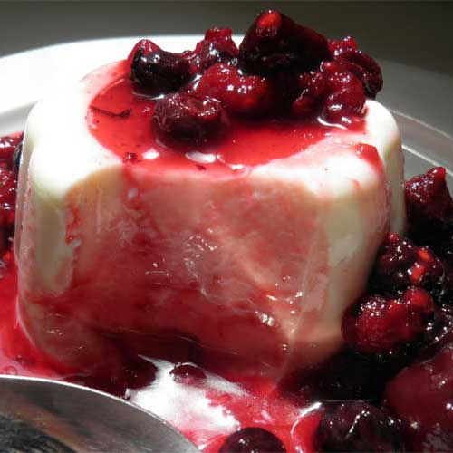

Bizcocho de Chocolate con Mango y Lima
Autor: AnaMilhojas de peras al verdejo
Autor: Gonzalo D´AmbrosioIsla flotante al Chocolate y pistachos caramelizados
 Autor: Laura
Autor: LauraPanna cotta clásica con coulis de frutos rojos
Autor: ReyesHelado de yogur y almendra
Autor: FilomenaTarta de tres chocolates
 Autor: Nuria Marín
Autor: Nuria MarínPostre cremoso de cerezas
 Autor: Eva Arguiñano
Autor: Eva ArguiñanoRosas del desierto
 Autor: Hogarutil
Autor: HogarutilTarta 'Pavlova'
 Autor: Nicolás Serrano
Autor: Nicolás Serranotarta casera de queso y naranja
Autor: Marina